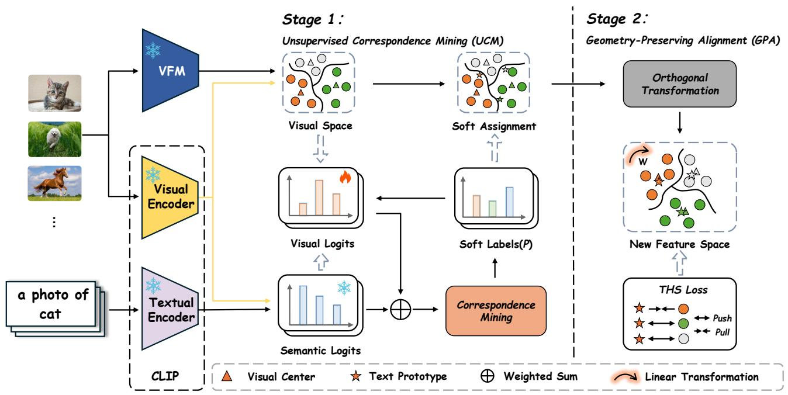

Geometry-Preserving Unsupervised Alignment for Heterogeneous Foundation Models Shuwen Yu, Zhanxuan Hu, Yi Zhao, Yonghang Tai, Huafeng Li；机构信息 arXiv 元数据未列出。 arXiv + ICML 2026 原文链接
编号2606.04385优先级P0类别ICML 2026会议arXiv + ICML 2026方法GPUA 把 vision-only foundation model 的 feature space 看作一种“视觉语言”，学习正交映射把 VFM feature 翻译到 VLM semantic space，同时尽量保持原有几何结构。来源arXiv / OpenReview
先说结论。通用视觉自监督系统越来越常同时使用 DINO/SAM/CLIP/SigLIP 等特征，GPUA 直接处理“不同 foundation features 如何兼容”的基础问题。 不需要标签、不更新 backbone，只用 feature-level access 就能缩小 VFM/VLM 间的 modality gap，目标是同时保留 VFM 的感知几何和 VLM 的语言语义。
Figureure 1 · t-SNE visualization of foundation-model representations on the PetsFigure 1. t-SNE visualization of foundation-model representations on the Pets. (a) The original CLIP space exhibits a pronounced modality gap between image-text embeddings. (b) VFM features yield more compact intra-class clusters, yet lack globally consistent alignment to semantic concepts. (c) GPUA (Ours) projects visual clusters onto their corresponding semantic anchors (⋆) while preserving intra-class structure, demonstrating effective geometry-preserving alignment and recovering accurate instance-to-prototype correspondences.这张可视化用来解释 Geometry-Preserving Unsupervised Alignment for Heterogeneous 学到的中间表征或对齐关系。重点看它是否支持正文里的机制判断。

Figureure 2 · The pipeline of GPUAFigure 2. The pipeline of GPUA. Stage 1: An unsupervised correspondence estimation module infers soft assignments (P) by jointly enforcing structural consistency and semantic alignment between visual features and semantic prototypes. Stage 2: These correspondences are used to derive the optimal orthogonal transformation (W), which is further refined via the THS loss to yield a hubness-robust embedding space.这张图概括 Geometry-Preserving Unsupervised Alignment for Heterogeneous 的整体方法流程。阅读时先看模块之间传递的训练信号，再看作者如何把目标拆成可优化的子问题。
核心问题
通用视觉自监督系统越来越常同时使用 DINO/SAM/CLIP/SigLIP 等特征，GPUA 直接处理“不同 foundation features 如何兼容”的基础问题。
方法拆解
GPUA 把 vision-only foundation model 的 feature space 看作一种“视觉语言”，学习正交映射把 VFM feature 翻译到 VLM semantic space，同时尽量保持原有几何结构。